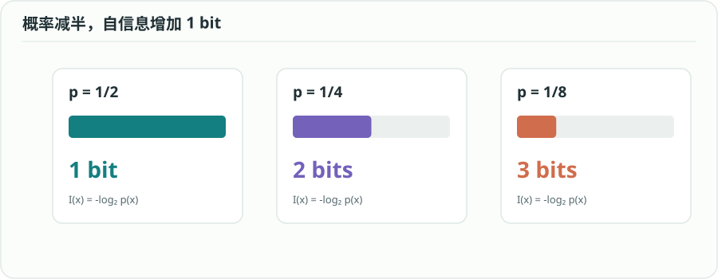
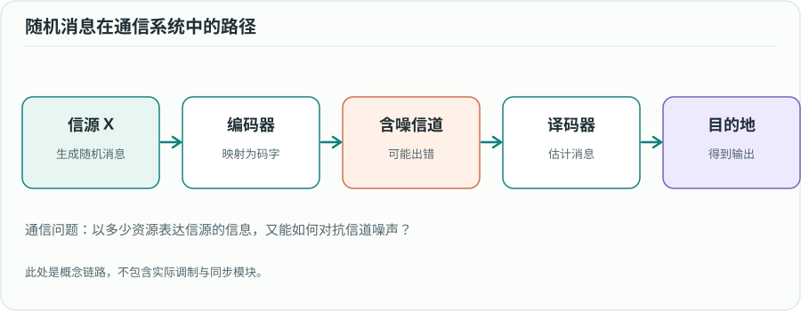

相同长度的消息，为什么信息量不同？
想象你连续抛一枚公平硬币，提前不知道结果。听到“正面”，你排除了另一种可能性。再想象一枚硬币几乎总是正面：听到“正面”并不意外，而极少见的“反面”则显得格外新鲜。
这不是说罕见的句子一定更重要，而是说观察结果发生之前的不确定程度不同。信息论把消息看作随机变量的取值，并为它规定一个概率分布；同一个事件在不同概率模型下可以具有不同的信息量。

把真实的通信过程拆成五步
发送方的信源产生消息 X。编码器将其映射为可以传送的符号或比特序列；物理信道可能改变这些符号；译码器据此产生估计；接收端最终得到输出。这条路径让我们将信息源的不确定性与信道中的错误分开讨论。

例如，你把 8 个等可能选择中的一个告诉朋友，理想情况下需要 3 个二进制选择来区分它们；如果某些选择明显更常见，平均编码长度可能下降。反之，若传输会出现错误，就可能需要添加冗余以提高可靠性。
从概率导出自信息
对概率为 p(x) 的事件 x，定义其自信息。只要 p(x)>0，并且独立事件的信息量可相加，就自然得到负对数形式。以 2 为底时单位是 bit。
若 p(x)=1/8，则 I(x)=3 bits；若 p(x)=1，则 I(x)=0。独立事件 x、y 满足 p(x,y)=p(x)p(y)，因此 I(x,y)=I(x)+I(y)，这也说明对数将“乘法概率”转成了“加法信息”。
这是单个结果的自信息，并非整套随机变量的平均熵。
比特和可区分的结果数
长度为 n 的二进制串共有 2n 种可能。因此，一个等概率的八选一问题可用 3 bits 表示；如果所有结果等可能，选择空间的大小为 M，则需要约 log₂M bits 才能索引每一个可能结果（定长编码必须取上整）。
注意这只是等概率、定长、无噪声的基础情形。真实的平均无损压缩需要考虑概率分布、码字可译码性与块长度；它的渐近极限由信源编码定理给出。带噪信道则需要引入信道容量和误码概率。
from math import log2
p = 1 / 8
assert -log2(p) == 3
assert 2 ** 3 == 8
print("surprisal =", -log2(p), "bits")概念边界与接下来需要的问题
自信息只描述一个已实现事件带来的惊讶；想比较两个随机信源，就必须在所有结果上按概率加权平均，得到熵 H(X)。想比较接收前与接收后的剩余不确定性，则要引入条件熵与互信息。
- 概率为零的事件在模型内不会出现；若形式上以零概率给发生的事件赋值，自信息趋向正无穷。
- 1 bit 不必对应一个实际存储位：信息量是数学量，文件格式、头部与编码约束会引入额外成本。
- “信息更多”不自动意味着“更真实”“更有用”或“意义更深”。
来源与延伸阅读
本章使用有限离散分布和以 2 为底的对数，除非另有说明。以下经典原始与教学资料可以用来核验定义、假设和推导。
- Claude E. Shannon, A Mathematical Theory of Communication (1948) — 通信系统与熵的原始框架。
- Cover & Thomas, Elements of Information Theory, Chapter 2 — 熵、互信息、KL、Jensen 与 DPI 的系统性推导。
- MIT 6.441 Information Theory 讲义 — 可供复核定义与不等式的大学课程材料。